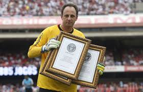

- Em 27 de julho de 2005 completou 618 jogos pelo São Paulo tornando-se o jogador que mais vezes atuou com a camisa do clube, quebrando o recorde de 617 partidas que pertencia a Valdir Peres;
- Em 22 de julho de 2007, na vitória do São Paulo sobre o Cruzeiro por 2 a 1 no Mineirão, completou 309 jogos em campeonatos brasileiros atuando pelo mesmo time quebrando o recorde que pertencia a Roberto Dinamite que havia atuado em 308 partidas pelo Vasco;
- No dia 1 de setembro de 2007, com uma goleada de 6 a 0 sobre o Paraná, no Morumbi, Rogério se tornou o goleiro são-paulino com a maior série de jogos sem sofrer gols em Campeonatos Brasileiros, superando Valdir Peres, que ficou 694 minutos sem ser vazado, em 1983;
- A série foi interrompida aos 47 min do segundo tempo da vitória de 2 a 1 sobre o Santos, em 15 de setembro, após nove jogos inteiros e dois parciais sem ter que ir buscar a bola no fundo das redes. No total, foram 990 minutos sem sofrer gols, que colocaram Rogério à frente da segunda maior sequência invicta da história do Campeonato Brasileiro (perde apenas para Emerson Leão que, jogando pelo Palmeiras em 1973, permaneceu invicto por 1057 minutos;
- No Campeonato Brasileiro de 2007, Rogério e o São Paulo com dezenove gols contra em 38 partidas se tornou o segundo goleiro menos vazado de toda a história de Campeonatos Brasileiros, perdendo apenas para Emerson Leão que jogando pelo Palmeiras em 1973 tomou treze gols;
- No dia 30 de abril de 2008 completou a marca de 800 jogos, na partida contra o Nacional do Uruguai válida pelas oitavas-de-final da Copa Libertadores da América;
- No dia 19 de agosto de 2009, com um vitória sobre o Fluminense por 1 a 0, Rogério Ceni tornou-se o jogador que mais partidas jogou da história do Campeonato Brasileiro, superando Zinho, que jogou por Flamengo, Palmeiras e Cruzeiro, que detinha o recorde com 369 partidas;
- Na primeira partida pela repescagem na Copa Libertadores da América no Morumbi na goleada de 5 a 0 do São Paulo contra o Bolívar, Rogério Ceni chegou a 83 jogos superando o goleiro Manga e se tornando o brasileiro o recordista de Jogos na Copa Libertadores da América, com 82 jogos;
- No ano de 2006, com o título Brasileiro, Rogério Ceni se tornou o jogador com mais títulos conquistados oficiais com a camisa do São Paulo, superando o zagueiro Ronaldão e o atacante Müller com 13 títulos. São 22 títulos ao todo, sendo 16 deles em competições oficiais. Rogério ainda tem 3 títulos quando atuava nas categorias de base;
- É o segundo goleiro da história que tem mais títulos em um só clube, ficando atrás apenas do Português Vítor Baía que conquistou 27 títulos pelo o Porto;
- Em 28 de outubro de 2010, em partida contra o Clube Atlético Paranaense (2 a 1 para o São Paulo) pelo campeonato brasileiro, chegou a marca de 700 jogos como capitão de um time, marca ainda não alcançada por nenhum outro jogador (é o atleta que mais entrou com a tarja de capitão no mundo). Ele recebeu a tarja de capitão no ano de 1999;
- Em 28 de abril de 2010 completou 900 jogos pelo São Paulo Futebol Clube, no empate com o Universitario, na cidade de Lima;
- Em 23 de julho de 2011, na partida contra o Atlético Goianiense com 108 jogos consecutivos superou o goleiro Suly, que na década de 1960 atuou em 107 partidas seguidas na meta tricolor e se isolou como jogador que mais vezes atuou consecutivamente da história do São Paulo.[89] A sequência foi quebrada quando ele completou 132 jogos seguidos e não pode jogar o próximo, contra o Vasco, devido a dores no tornozelo esquerdo. Na partida foi substituído por Denis e o resultado foi 0 a 0;
- Depois da aposentadoria do zagueiro norte-irlandês Noel Bailie, no dia 30 de abril de 2011, Rogério Ceni se tornou o jogador em atividade com o maior número de partidas por um só clube. Bailie tinha 1.014 jogos pelo Linfield e Ceni tinha 974 jogos na época;
- Em 22 de maio de 2011, na partida contra o Fluminense válida pela primeira rodada do Campeonato Brasileiro completou uma série de 8786 minutos. É o atleta que mais minutos consecutivos jogou na história do São Paulo. Nesta partida foi substituído por Denis aos onze minutos do segundo tempo devido a dores no tornozelo esquerdo;
- É o goleiro do São Paulo que mais venceu e que tem melhor aproveitamento em disputas de pênalti pós-jogo: 12 (em 16);
- Rogério é o maior vencedor do Troféu Mesa Redonda: ganhou as edições de 2004, 2005, 2006 e 2007;
- Rogério é o maior vencedor da Bola de Prata, premiação concedida pela revista Placar para os melhores de cada posição no Campeonato Brasileiro, ele ganhou em 2000, 2003, 2004, 2006, 2007, 2008 e em 2008 ganhou uma Bola de Ouro;
- Em 7 de setembro de 2011, completou 1000 partidas pelo clube do Morumbi, tornando-se o terceiro jogador a atuar mais partidas pelo mesmo clube no Brasil.
- No dia 8 de junho de 2011, completou 100 jogos consecutivos na meta tricolor, contra o Atlético-MG pela terceira rodada do Campeonato Brasileiro. A última vez que Rogério desfalcou o time foi contra o Mirassol pelo Campeonato Paulista de 2010, quando os titulares foram poupados para a disputa da Copa Libertadores;
- No dia 16 de outubro de 2012 na vitoria do São Paulo sobre o Figueirense, o goleiro Rogério Ceni completou uma marca de 500 jogos no estádio tricolor. É o recordista geral de jogos no Estádio do Morumbi;
- No dia 8 de setembro de 2013 pela 19º rodada do Campeonato Brasileiro Rogério Ceni comemorou uma marca de 500 jogos em campeonatos nacionais, sendo disparado o recordista absoluto de atuações.
- No dia 24 de novembro de 2013 completou 1.117 jogos com a camisa do São Paulo, se tornando o jogador com mais jogos por uma única equipe na historia do futebol.
- Em 20 de abril de 2014, o goleiro recebeu três certificados do Guinness, o livro dos recordes como jogador que mais vezes atuou e foi capitão de um mesmo time na história do futebol. Ganhou a oficialização como jogador que mais vezes atuou por um mesmo time na história do futebol mundial, onde atuou por 1.139 e o certificado de jogador que mais foi capitão de um mesmo time com 888 partidas. O Guinness também apurou recorde de gols que indica 117, o máximo já anotado por um goleiro.
- No dia 27 de outubro de 2014, o goleiro superou o recorde de Ryan Giggs de mais vitórias em um único time, contra o Goiás no Morumbi, recorde que antes era de 589 jogos.